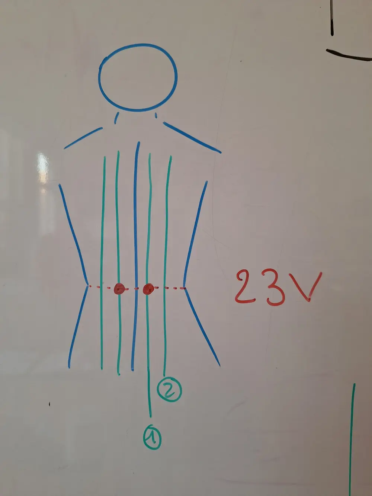
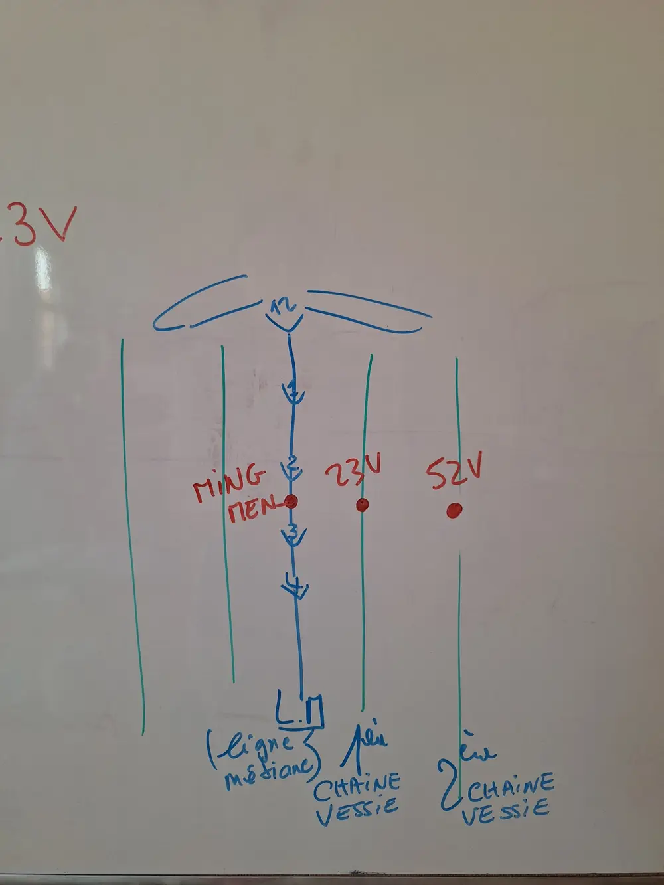
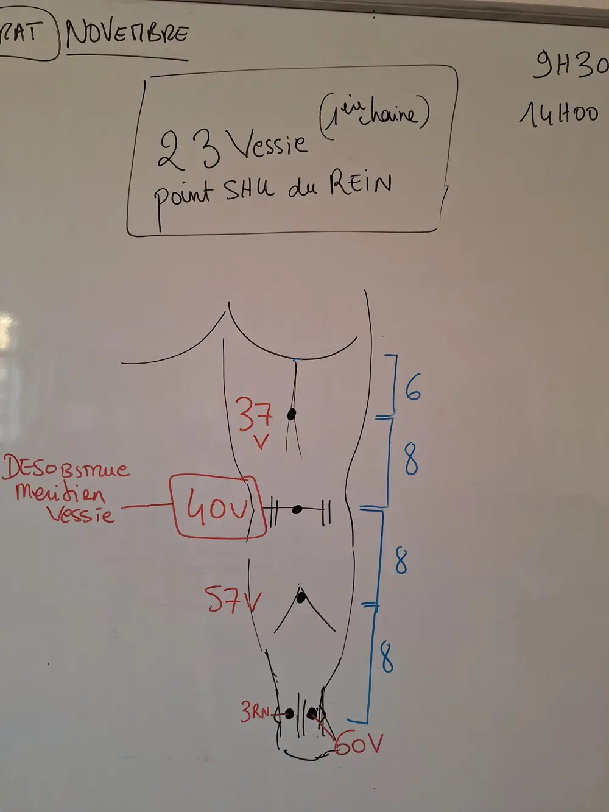
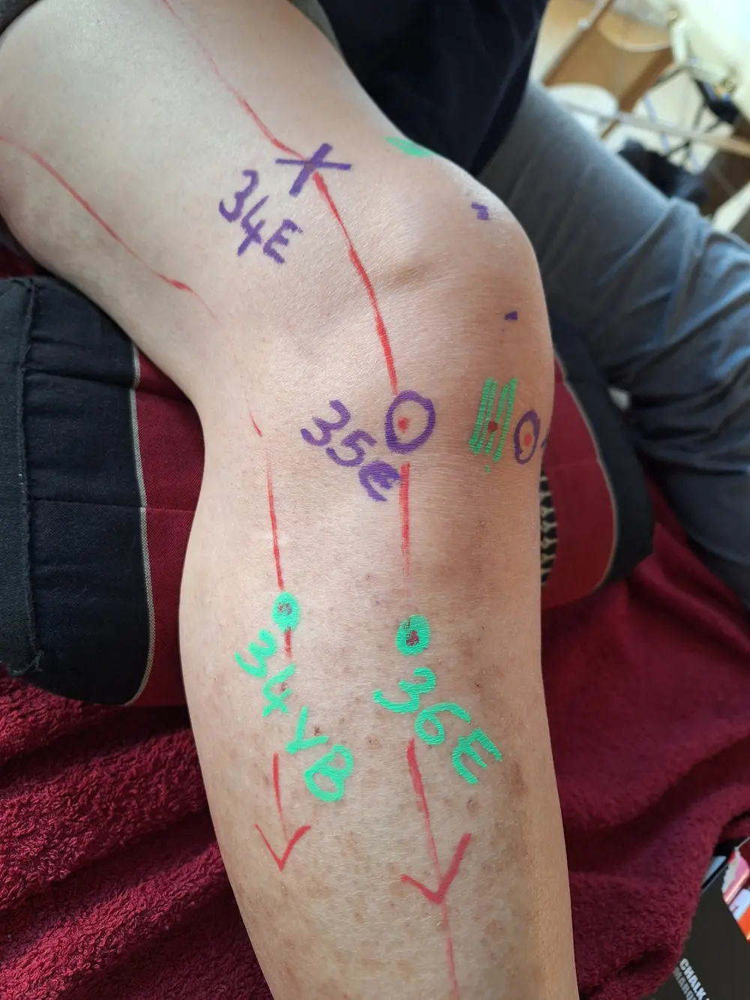
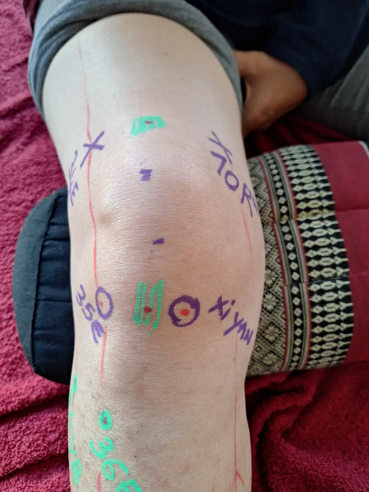
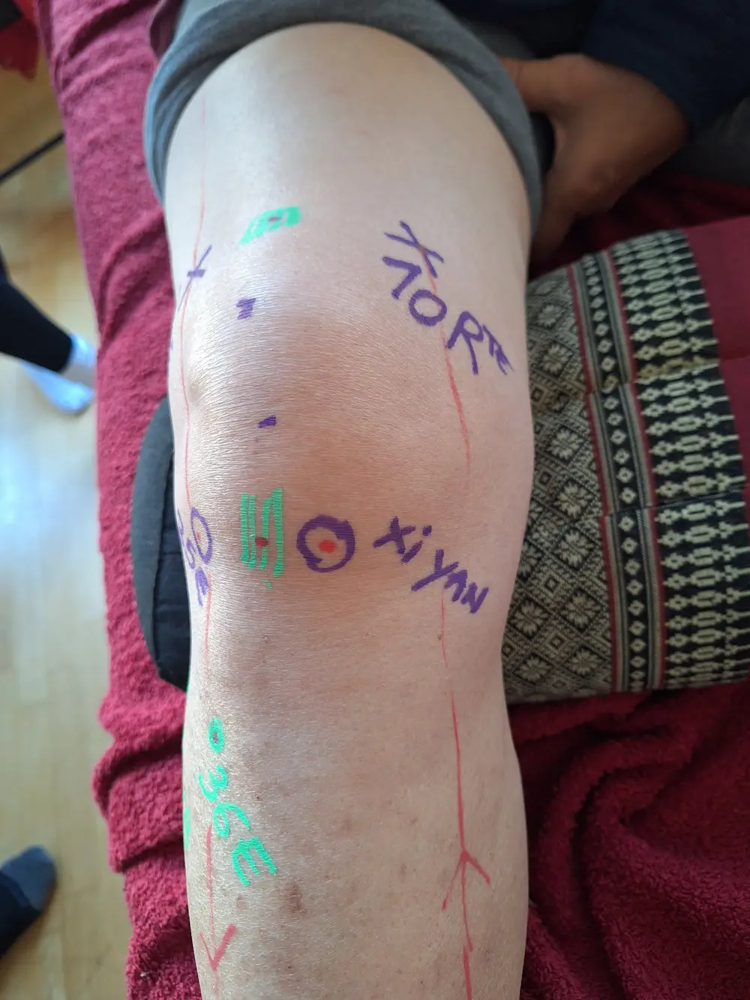

Ventouses · Lombalgie · Genou
Les protocoles pas à pas sont dans les fiches : Fiche Lombalgie · Fiche Genou.
火罐Les ventouses Huǒ guàn
La ventouse est dispersante : mobiliser, faire circuler, chasser. Elle fait circuler assez fort le Sang et l'énergie, chasse le Xie Qi et calme la douleur. À l'inverse, le moxa tonifie.
Action principalement antalgique et circulatoire. Dispersion maximale = accroche forte + pose longue.
Quand les utiliser
On les applique quand il y a une plénitude, un excès, une stagnation. Moins quand il y a un vide ou une faiblesse : « on ne fait pas circuler du vide ». → cours Vide et Plénitude
- Tendino-musculaire : « top pour ça »
- Respiratoire, début de rhume (Vent-Froid, nez qui coule) : points du haut du dos pour dégager les Poumons
- Épaule en plénitude : climat ou stagnation (cf. l'histoire du taximan)
- Stagnation de Sang, Humidité
Action plutôt en surface : moins intéressant pour un traitement en interne. Personne en vide, fatiguée : pas intéressant.
L'accroche
- Trois accroches : très faible, moyenne, forte. C'est quand tu poses que tu détermines l'accroche.
- Faible : on peut la glisser ou la laisser poser. Forte : on ne peut plus la glisser.
- Une accroche forte est impressionnante : tu n'es pas obligé.
Lire la trace
- Plus il y a de stagnation, plus la trace est violette, plus elle reste longtemps et plus ça accroche
- Si rien ne se passe : sûrement un vide [lecture de tes notes]
- Un patient qui arrive avec des marques de ventouses : tu dois pouvoir dire si c'était intéressant, s'il faudrait en refaire ou pas
Contre-indications et précautions
| Ne pas poser | Précautions |
|---|---|
|
|
L'esprit de la prof
Les ventouses ne sont pas obligatoires : on apprend tous les moyens de traitement complémentaires, certains accrochent plus que d'autres. L'idée, c'est de savoir à quoi ça sert et comment c'est utilisé. Si quelqu'un en a vraiment besoin et que tu n'as pas envie d'en faire, tu peux l'orienter.
En bien-être, un bon début : savoir poser, et proposer à peu près à tout le monde une ventouse glissée sur tout le dos, sur les chaînes de Vessie.
Matériel et pose
Bien choisir sa ventouse
- Plusieurs types : silicone, verre, à aspiration (pompe)…
- Plus le bord est arrondi, plus c'est confortable. Bord saillant : on ne la déplace pas.
- 5 tailles présentées. Taille 3 = polyvalente, pour tout le monde, pour le dos. Les grandes : plus pratiques pour les grands dos [lecture à confirmer].
Matériel
Alcool (à brûler ou à 90°) · coton (le top : coton démaquillant rond plié en 4) · pince de type Kocher · ventouses · briquet.
Technique traditionnelle de pose (polycopié « Appliquer les ventouses »)
- Fixer le coton plié en 4 à l'extrémité de la pince Kocher.
- Tremper le coton dans l'alcool, enlever l'excès en pressant sur les bords de la bouteille. Écarter la bouteille. Trop d'alcool = gouttes dangereuses · pas assez = flamme trop faible, pas assez de vide pour la prise.
- Enflammer le coton. Coton trop imbibé : laisser se consumer le surplus quelques secondes. Seul l'alcool doit alimenter la flamme. Ne pas laisser brûler le coton.
- Introduire le coton enflammé dans la ventouse. Zone choisie à l'avance, ventouse dans une main, pince dans l'autre. Pince à l'horizontale, doigts hors des trous (pas comme des ciseaux). Ne pas chauffer le bord. Pas de grands mouvements avec la flamme.
- Appliquer assez rapidement : la rapidité fait l'efficacité, les gestes brutaux sont inutiles.
- Retirer : une pression d'un doigt à la base fait entrer l'air et la décolle.
Temps de pose : en général 5 à 20 minutes. « D'avoir ça sous le coude pour éviter de cramer la maison. »
Ventouses glissées et déroulé de séance
Si une zone reçoit Tuina et ventouses : ventouses toujours après le massage. Ex. Tuina dos/épaules/nuque → ventouses sur cette zone → retourner la personne : tête, bras, ventre.
Ventouses en mouvement (glissées)
- Drap d'examen pour protéger pantalon et culotte · huile avant, sans trop masser
- Tenir la peau au besoin avant de tirer · passer droite ↔ gauche par le bas des lombes
- Tracés : « W » en bas des lombes, « L » sur les trapèzes
- Pomper le surplus d'huile avec le drap ou du Sopalin, sans frotter
| Quand | Consigne |
|---|---|
| Avant | Informer des traces violacées possibles quelques jours, agir avec un accord commun |
| Pendant | Fenêtres fermées, ventouses couvertes. Demander si l'intensité convient. |
| Après | Se couvrir. Pas de vent, froid, humidité. Pas de bain, douche, piscine : 3 h (polycopié) — 2 h (message Discord). |
腰痛Lombalgie Yao Tong · → fiche protocole
Le Rein, « le boss » des lombes
S'il y a une seule chose à retenir : associer les lombes avec les Reins. Cette zone est consolidée, alimentée par l'énergie des Reins, plus que par un autre organe.
- Le Rein avec un grand R : en MTC, un organe ne se limite pas à son support matériel, ce sont aussi ses fonctions énergétiques.
- Le Rein stocke le Jing, l'essence : les réserves pour toute la vie. Longévité, constitution, croissance, développement, reproduction.
- L'image du haricot : le Rein ressemble à un haricot, et dans le haricot planté, il y a déjà tout pour sa croissance, ses feuilles, ses racines. On est plus ou moins « gâté » à la naissance.
- Le Rein gouverne les os, les moelles (dont le cerveau) et la zone des lombes.
- En vieillissant, l'énergie des Reins décline : tassements osseux, problèmes articulaires, dents qui tombent, mémoire à court terme, et plus de faiblesse dans les lombes et les genoux.
La première question : plénitude ou vide des Reins ?
| Plénitude (climat, tendino-musculaire) | Vide des Reins |
|---|---|
| Aigu, récent, cause identifiée : une semaine sous la tente humide, du jardinage, une sur-sollicitation | Chronique, sourd, intermittent, pendant des années. « On dirait qu'elles font tout pour soulager leurs lombes, elles ont quand même mal. » |
| Juste la zone | Des symptômes Rein ailleurs : reproduction, urinaire, os, articulations. Rarement les lombes seules. |
| → Traiter la zone | → Il ne suffit pas de traiter la zone : il faut aller plus loin, traiter l'interne (points du méridien du Rein) |
Souvent les deux : « le plus souvent les Reins sont en Vide ET un Xie Qi est bien présent ». Ça détermine le pronostic : une séance ou cinq.
Le 60V et le 3Rn, de part et d'autre du tendon d'Achille
| Point | Où | Rôle |
|---|---|---|
| 60V | Face externe, à côté du tendon d'Achille | Dégage le méridien, draine la chaîne postérieure |
| 3Rn | Face interne, en face du 60V | Agit sur l'énergie du Rein. Point diagnostique : en cas de vide, il est tout flasque, faible, voire creusé. On le masse, et on conseille à la personne de le masser souvent. Vide trop important : massage + pharmacopée. |
Les points du bas du dos



| Point | Repère (prof) | Nom chinois |
|---|---|---|
| Ming Men | Sous l'apophyse épineuse de L2, entre L2 et L3, au niveau de la taille | 4DM |
| 23V | Même ligne, à 1,5 cun de la ligne médiane (1re chaîne). Point Shu des Reins : point local de traitement + action sur l'énergie du Rein. « Un tantinet intéressant de ne pas le louper » : précision dans les techniques de pouce. | Shenshu |
| 52V | Encore 1,5 cun plus loin : 2e chaîne Vessie | Zhishi |
Point Li Lao Shi (« le point du professeur Li ») : point hors méridien, en avant du 30VB, pas dans les livres. Utile pour les lombalgies qui irradient dans la jambe et les gens souvent assis (camionneurs, ordinateur). Localisation détaillée dans la fiche lombalgie.
Points hors méridiens : ils sont à la fin des manuels, mais leurs numéros changent d'un livre à l'autre. Les apprendre par leur nom chinois (ex. Yin Tang).
Tuina selon le syndrome (polycopié — en plus du protocole de base)
Plénitude (dur) → disperser.
| Syndrome | AN ROU FA sur | En plus |
|---|---|---|
| Froid-Humidité | 20VB · 12V · 13V · 4GI · 7P | CA FA tout le dos jusqu'à bonne chaleur, finir par ce mouvement. Serviette chaude en fin de séance. Moxas OK. |
| Stagnation de Sang | 17V · 18V · 3F + tous les points A Shi | — |
| Vide de Qi du Rein | 23V · 3Rn · 6RM · 36E · 4GI | — |
| Vide de Yang du Rein | 4DM · 3Rn · 3Rte · 36E | AN MO FA tout le dos. CA FA région lombaire, insister sur la ceinture (23V). Moxas OK. |
| Vide de Yin du Rein | 23V · 3Rn · 6Rte · 4RM | — |
À chaque fois : + 40V et les points des lombalgies.
Genou → fiche protocole
Les genoux, c'est une zone « un petit peu biscornue » qu'on est moins habitué à masser que le dos. Il faut apprendre, d'autant plus que les faiblesses des genoux sont fréquentes.
Les points



| Point | Où (prof) | À savoir |
|---|---|---|
| 35E | Œil externe du genou : le creux sous la rotule, côté externe | Les yeux du genou : grands points de traitement. Action directe au cœur de l'articulation (ménisque…), « comme des portes vers l'intérieur ». Petits gestes, pas brusques. |
| Xi Yan | Œil interne : point hors méridien. Xi = genou, Yan = yeux. | |
| 34E | 2 cun au-dessus du bord de la rotule, côté externe, dans un creux (la rotule fait 2 cun) | Faciles à trouver : dans des creux. Auto-massage conseillé. |
| 10Rte | 2 cun au-dessus du bord de la rotule, côté interne, en miroir | |
| 36E | Le long du tibia : la « petite colline » à côté, on va dans son sillon et on remonte jusqu'au creux | |
| 34VB | Sous la tête du péroné, en avant | |
| 40V | Creux poplité, au milieu entre les deux tendons | Option : sur le dos, jambe à 90°, pouces par en dessous |
Les zones vertes (hors méridien)
- Sous la rotule : entre les deux yeux du genou. Tu sens comme un tendon, des fibres.
- Au-dessus de la rotule : un peu au-dessus, mais un tout petit peu en dessous de la ligne 34E – 10Rte. Creux jambe pliée, petit bombé jambe tendue, dur quand on décolle le pied du sol. « Zone importante de mobilité » : on lui fait un LI.
- Ça dépend de la morphologie : ce sont des zones qui se trouvent à la palpation.
Trouver les méridiens sur la cuisse
- Coupe horizontale de la cuisse : VB sur le côté (la couture du pantalon), Foie de l'autre côté.
- Coupe verticale : on tombe entre le territoire de la Rate et celui de l'Estomac. À 45° de part et d'autre : Rate et Estomac.
- Le tendino-musculaire de l'Estomac se sent sur la cuisse : on peut lui faire une petite saisie.
- Rate sur la jambe : au bord du plateau du tibia, « dans un grand sillon, un grand canyon ».
Le sens du massage
| Méridien | Sens | Pourquoi |
|---|---|---|
| Estomac, VB | On descend : d'un peu au-dessus du genou jusque presque à la cheville | Sens du méridien. Plus c'est une plénitude (inflammation), plus on draine jusqu'en bas, jusqu'aux orteils. |
| Rate | On remonte : au moins jusqu'au 10Rte | Sens du méridien, retour veineux. La Rate est un Yin : elle a plutôt besoin d'être renforcée que dispersée. |
Jambes arquées : tensions plutôt à l'intérieur (Rate, Foie). Jambes en X : plutôt à l'extérieur. Il faudra s'adapter.
- Appuyer sur la rotule et la bouger
- Masser un genou en épanchement (gonflé, chaud, douloureux). On peut masser d'autres points à distance, pas le genou. L'idée : comprendre pourquoi ça s'est mis en épanchement.
Timing, examen, entraînement
- « La pâte à tarte » : ce qu'on voit en 1re année, c'est la base, « on n'a même pas décidé si on faisait un clafoutis ou une quiche ». On ne peut pas enlever de gestes : c'est obligatoire quel que soit le problème.
- 30 minutes par protocole. S'entraîner à faire chaque protocole efficace en une demi-heure, parce qu'en séance il faudra souvent ajouter autre chose (points, ventouses, le dos…).
- Examen final en juin : on tire au sort un des protocoles de l'année (lombalgie, genou, torticolis…) comme un patient qui arrive. Timing : 30 minutes.
- Problème d'un seul côté (un genou, une épaule…) : ¾ du temps sur le côté atteint, ¼ sur l'autre, à cause des compensations. Ex. 30 min = 20 + 10.
- Pas une liste de courses : on commence par TUI, on finit par les percussions, et entre les deux on prend les points « en sandwich » entre des gestes larges, « cocoonants ». Chaque point 2 à 3 fois, chaque fois un peu plus précis ou plus profond.
- Lombes : un passage droite-gauche est obligatoire pour les techniques de pouce. Le GUN peut servir à passer de l'autre côté.
- Questions : sur le salon général Discord (tout le monde en profite), ou directement à la prof pour le rattrapage.
Prochaines dates
| Quand | Quoi |
|---|---|
| Week-end de décembre | Théorie : la théorie des méridiens (« un cours important qui va supporter pas mal la suite »). Samedi après-midi : intervenante en repérage anatomique (étages vertébraux, espaces intercostaux) pour les points Shu du dos et les points Mu devant. |
| Samedi 5 décembre | Entraînement : tu es noté « obligatoire » pour rattraper la pratique. Ventouses possibles. |
- Une présentation de toi en 2 minutes devant le groupe (14 personnes) : pourquoi tu es là, ce qui te motive, cabinet ou pas
- Ta liste de questions et de gestes à revoir sur du vivant (TUI alterné, point Li Lao Shi…)
Les techniques Tuina Shou Fa · polycopié
| Famille | Techniques |
|---|---|
| Oscillations Bai Dong Lei Shou Fa | YI ZHI CHAN TUI FA — pousser d'un doigt façon chan GUN FA — rouler ROU FA — pétrir / rotation fixe |
| Frottants Mo Ca Lei Shou Fa | MO FA — pétrir / friction circulaire CA FA — friction TUI FA — pousser CUO FA — friction entre les mains |
| Secousses et vibrations Zhen Dong Lei Shou Fa | DOU FA — secouement ZHEN FA — vibration |
| Pression Ji Ya Lei Shou Fa | AN FA — pression simple DIAN XUE — pointer BO FA — remuer LI FA — mettre en ordre NA FA — saisie NIE FA — pincer-rouler NIAN FA — rouler avec les doigts |
| Battants Kou Ji Lei Shou Fa | PAI FA — battement de la main KOU FA — percussion QIAO FA — percussion |
Devoirs et ressources
- Refaire au moins 3 fois le protocole lombalgie, puis en 30 min
- Refaire au moins 3 fois le protocole genou, puis en 30 min
- Revoir vide et plénitude → cours Vide et Plénitude
- Revoir les vidéos du cours
- Ventouses : s'entraîner sur soi, face externe de la cuisse (poser, décoller, recommencer) · accroche douce, moyenne, forte
Pour aller plus loin
- Maciocia, Les principes fondamentaux de la médecine chinoise
- Daniel Henri, La médecine des ventouses
- Un livre d'acupuncture pour les trajets des méridiens (Deadman, Focks)
Matériel
- Ventouses : Jing Wei Shop (jingweishop.com) — commande groupée sur le salon général · Tables : Massage Factory ou Leboncoin